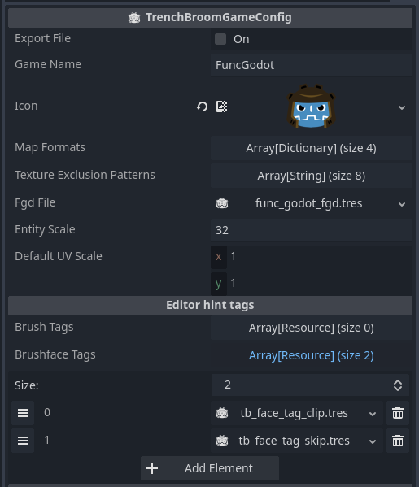
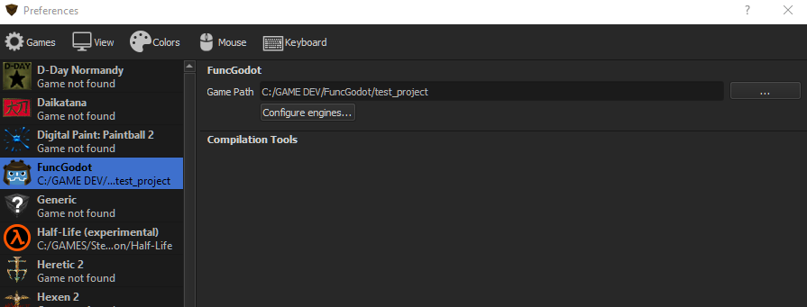
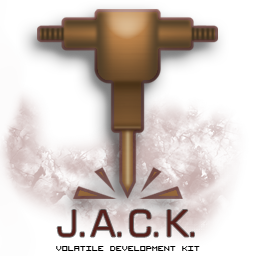
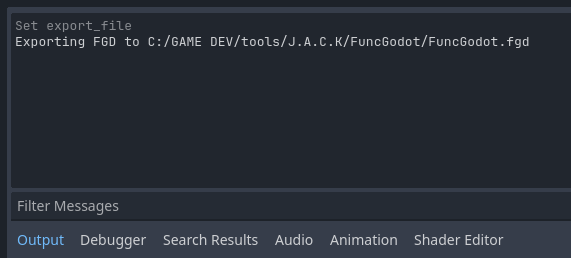
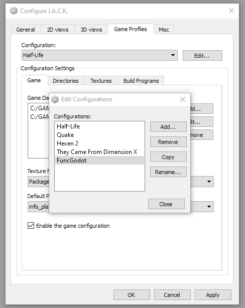
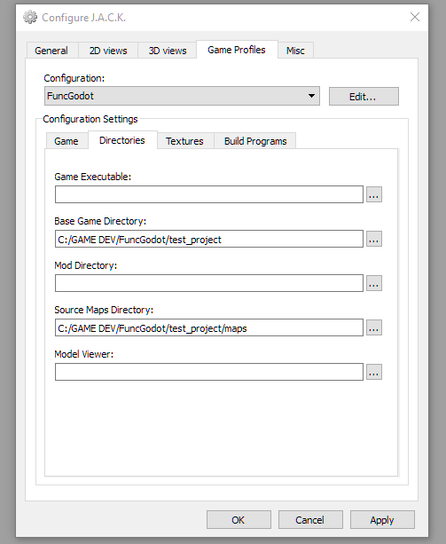

Map Editor Configuration
In order to map for Godot in your chosen map editor, you'll need to tell your map editor about your game. Each map editor has its own method of doing this. While FuncGodot can import any map file using the Quake Map format, official support is currently limited to only those that support the FGD format.
TrenchBroom

TrenchBroom is the most commonly recommended editor for FuncGodot, with multiple resources dedicated to configuring it. The primary resource is the TrenchBroomGameConfig, with the TrenchBroomTag providing additional quality of life options in the editor.
You'll need a TrenchBroom Game Config resource in order to build and export a game configuration file for TrenchBroom. Let's take a look at the resource properties:

Most of these properties should be fairly obvious in their purpose. The FGD File should be your master FGD that contains all of your other base FGDs and entities. Entity Scale only scales the display models.
Brush Tags and Brushface Tags are strictly for TrenchBroom and have no effect in Godot. They can affect shortcut keys and have transparency effects applied to them, along with a few other features. FuncGodot comes with a few pre-made common tags. Feel free to use them in your own GameConfig resources.
Exporting the Game Config will use the directory set in your Project Configuration's Map Editor Game Config Folder. Consult the TrenchBroom Manual's Game Configuration documentation for more information. Once you've exported your Game Config, open up TrenchBroom and click New Map. You should now see your project in the games list.

You'll need to set the game path so that TrenchBroom can find your game's textures and any models if you created some for it. Open TrenchBroom's preferences and set your game's path to the one you set to Map Editor Game Path with the Project Configuration.

Now you should be ready to start mapping for Godot with TrenchBroom!

J.A.C.K.

Due to how games are configured in J.A.C.K., FuncGodot does not have any dedicated resources for it but the process is still fairly simple.
Make sure your Project Configuration's Map Editor Game Config Folder is pointing to your game's folder in the J.A.C.K.'s game configuration folder. When you export an FGD file, FuncGodot will print in the Godot Output where it was saved to.

Once exported, you'll need to add your game to the Game Configurations list. Be sure to add your newly exported FGD as well.
 
Lastly you'll want to set your Base Game and Source Maps directories.

When it comes to textures, something to keep in mind is that you do not have to use the same exact texture files from your project. You can set up a WAD file for use with J.A.C.K. but then in your Godot project have loose texture files and premade materials. As long as the relative texture paths match without the file extensions, FuncGodot will be able to select the correct textures. That said, FuncGodot does support using WAD files with your maps. Use whichever method is right for your project.
And with that, you should be all set to start mapping in J.A.C.K.!

NetRadiant Custom